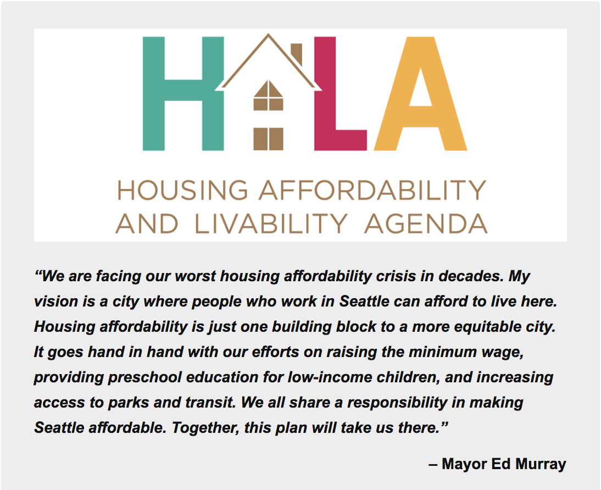

Method
For each plot of land ....

A study of affordability and the effect of HALA Proposal L. 1 in Seattle.
Home prices have risen in Seattle faster than anywhere else in the nation, for a whole year straight. With other similar headlines coming up, Seattle has been taking steps to ensure affordable housing for all its inhabitants.
In 2014, former Seattle mayor, Ed Murray, put together a committee to study and come up with solutions to the housing affordability problem in Seattle. The committee created a set 65 recommendations, some of which have already been enacted.
For our project, we plan to focus on Proposal L. 1 of HALA and whether this proposal should be enacted, and if so, to what extent?
The full text of the proposal is below.
For City owned property, the City should mandate that surplus and underutilized properties that are suitable for housing development be prioritized for affordable housing. It should explicitly allow the sale or lease of City-owned land at less than fair market value for affordable housing purposes, recognizing that this comes at a cost to other city needs and general funds.
When land is not suitable for housing development, the unrestricted proceeds from sale should be dedicated to affordable housing development. The City should also create a mandate for the codevelopment of affordable housing in conjunction with new public buildings and investments such as community centers, libraries, public schools, and other institutions of learning.
To summarize, the proposal wants to build housing on underutilized land, that the City already owns. If the land isn't suitable for homes, then the proceedings from the sale go directly towards affordable housing.
Given the proposal, it's natural to ask about the land the City owns. How much of this is suitable for new homes? How many people could we house on this land? At what cost? But, before we try to find out whether this is a good solution, we need to understand what is a good solution. HALA's goals included creating 20,000 affordable housing units and 30,000 housing units at market price. Because we want to focus specifically on the affordable housing part, we begin our study by finding out how many people are burdened by the rent they pay. We then move on to the viability of the proposal. Let's go down the rabbit hole!
When we look at income, rent and cost of essentials in Seattle we can understand economic pressures people might be facing. We used IRS tax-bracket data for the city of Seattle to establish a starting point for our investigation. Against the tax-bracket data we can overlay certain cost values to see how affordability differs for different income-levels. The next most important metric was rent data. Using Zillow's API we retrieved rent data for all the zipcodes in Seattle. If you look at the model you will see the varying economic situation for given earners per zipcode, overlayed with the rent they pay. The entry boxes let you see how different spending levels on rent produce different outcomes in terms of annual extra income.
Extra income.
Being able to afford housing doesn't just mean people have enough money out of their total. Money spent on rent needs to be a reasonable amount that doesn't limit people in other aspects of life. They need to be able to save and spend on other things. This is a rough metric of the quality of life. ...
For each plot of land ....
These are the numbers we got.
This is what the numbers mean.